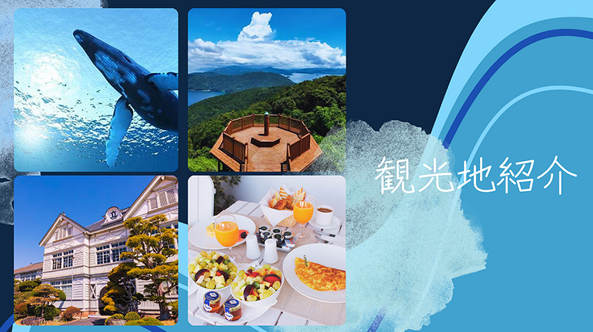
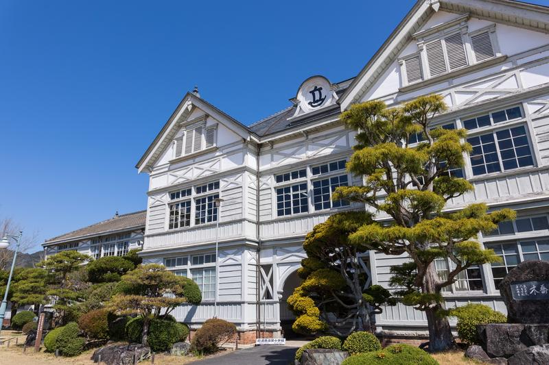
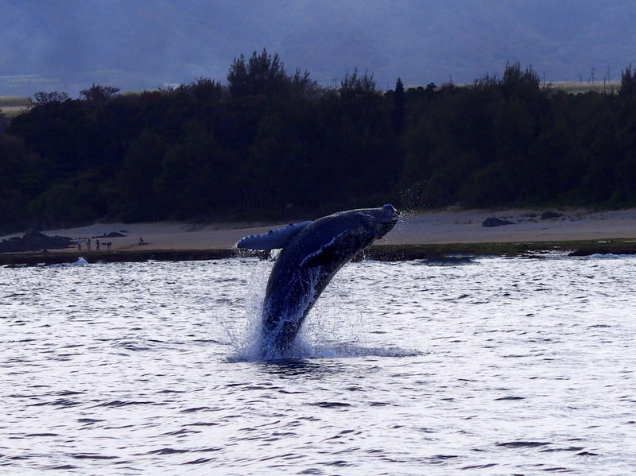
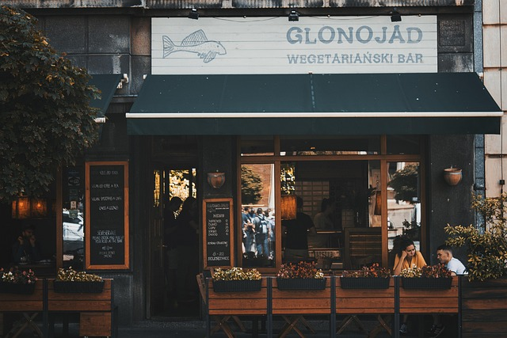
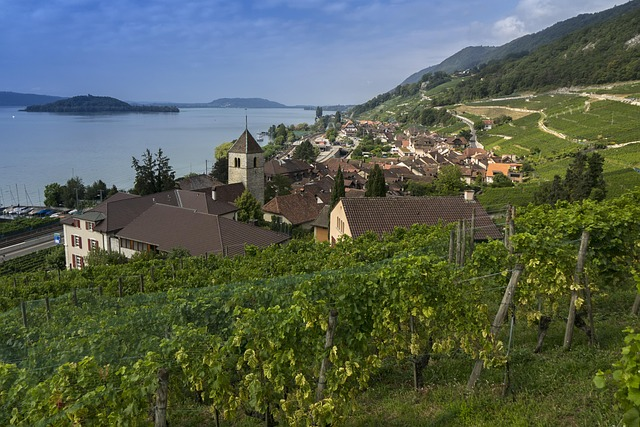

「九寺楽町立 海の記憶博物館」
九寺楽町のシンボル、クジラの神秘を深く知る場所。巨大なクジラの全身骨格標本は圧巻の一言です。その悠久の姿を前にすれば、自然の偉大さと生命の尊さを感じ、心が洗われます。お子様から大人まで、知的好奇心と感動に満たされる空間です。

ホエールウォッチング
穏やかな九寺楽の海で、迫力満点のホエールウォッチングを体験しませんか？運が良ければ、潮を噴き上げるクジラの群れや、ダイナミックなジャンプに遭遇できます。感動と興奮が同時に押し寄せる、九寺楽町でしか味わえない特別なアクティビティです。

くじらカフェ
観光の合間に、ほっと一息。地元食材を活かしたメニューと、クジラをモチーフにした可愛らしいスイーツが自慢のカフェです。大きな窓から見える九寺楽の海景色は、まさに最高の癒し。旅の疲れを忘れ、ゆったりとした贅沢な時間をお過ごしください。

潮風（しおかぜ）展望台
九寺楽町で最も「癒し」を感じられる場所の一つ。眼下には、クジラが泳ぐ青い海と、美しい町並みが広がります。特に夕暮れ時や、夜に星空を眺める時間は格別です。潮風に吹かれながら、心ゆくまで絶景を独り占めできる、最高のビュースポットです。